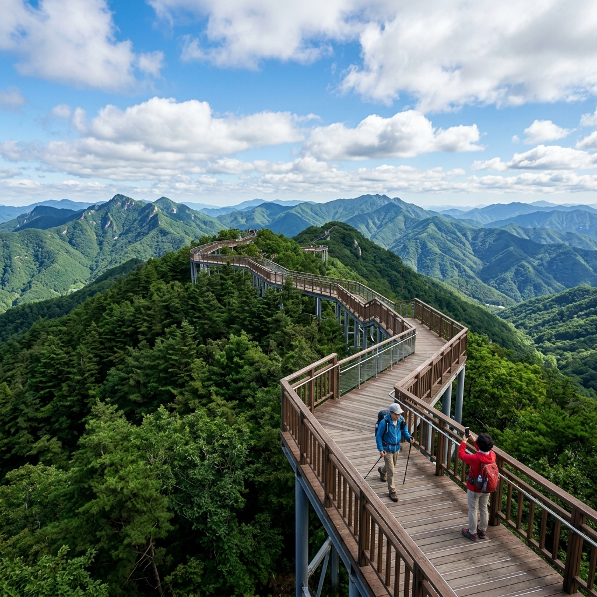
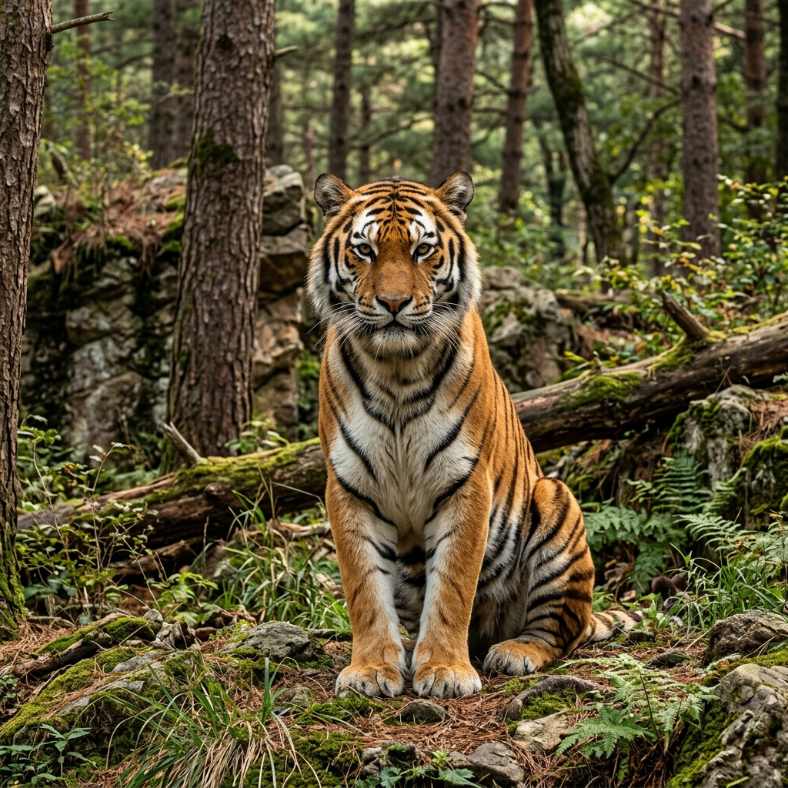
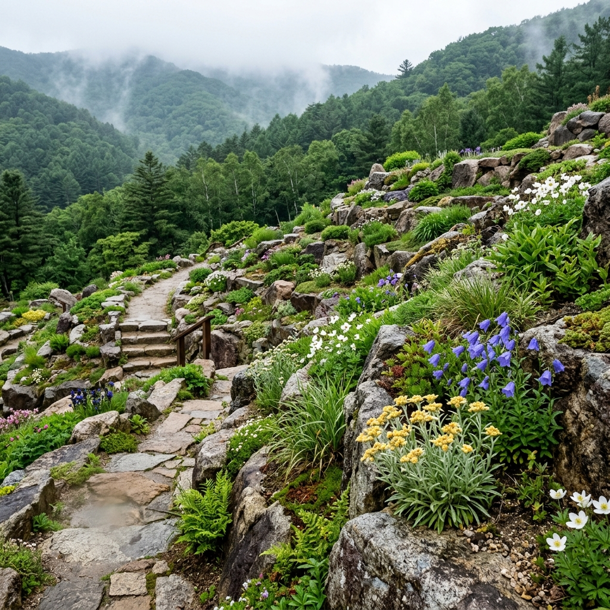

이 수목원에서 가장 먼저 발걸음을 옮긴 곳은 단연 스카이워크였습니다.
백두대간수목원의 스카이워크는 해발 약 1,100m 능선을 따라 설치된 공중 데크 구조물입니다.
트램으로 수목원 안쪽까지 들어간 뒤 진입 구간에서 내리면, 능선 위로 길게 뻗은 데크 산책로가 눈앞에 나타납니다.
이 데크는 숲 위를 공중으로 가로지르도록 만들어져, 발밑으로 나무 꼭대기가 내려다보이는 색다른 감각을 안겨 줍니다.
구조가 흔들림 없이 단단해서 고소공포증이 있는 사람도 큰 부담 없이 걸을 수 있다는 점이 인상적이었습니다.
데크 끝 전망대에 서면 백두대간 산줄기가 사방으로 시원하게 펼쳐지고, 날이 맑은 날에는 저 멀리 소백산 연봉까지 또렷이 잡힙니다.
6월에는 능선 아래로 초록 숲이 끝없이 깔려 마치 '초록 바다' 같은 풍경이 연출됩니다.
왕복 거리는 1~1.5km 정도라 천천히 걸어도 한 시간이면 충분히 다 돌아볼 수 있습니다.
다만 능선 위는 바람이 거센 날이 잦으니 얇은 바람막이 한 벌은 꼭 챙기는 편이 좋고, 6월이라도 고산의 아침 기온은 10도 초반까지 떨어질 수 있다는 점을 기억해 두세요.

다른 어떤 수목원과도 백두대간수목원을 확연히 구별 짓는 결정적 공간이 바로 호랑이숲입니다.
이곳에는 현재 아무르호랑이(백두산 호랑이, Siberian Tiger)가 살고 있습니다.
아무르호랑이는 고양이과 동물 중 세계에서 덩치가 가장 크며, 야생 개체수가 500마리도 채 안 되는 것으로 추정되는 국제적 멸종위기종입니다.
한반도에서는 일제강점기 이후 자취를 감춰 야생에서는 더 이상 볼 수 없게 되었고, 결국 이 수목원의 호랑이들이 한국에서 가장 가까이 들여다볼 수 있는 살아 있는 백두산 호랑이인 셈입니다.
호랑이숲은 좁은 우리가 아니라 울창한 숲을 자연 서식지에 가깝게 꾸민 대형 공간입니다.
수 헥타르에 이르는 숲을 누비는 호랑이를 유리벽이나 특수 안전 펜스 너머로 비교적 가까이 관찰할 수 있습니다.
호랑이가 활발히 돌아다니는 때는 보통 오전 먹이 공급 시간대와 해 질 무렵이라, 움직임을 보고 싶다면 오전에 찾는 편이 확률이 높습니다.
관람 시간과 입장 방법은 미리 수목원 홈페이지(bdna.or.kr)에서 확인해 두는 것이 필수이며, 별도 관람 구역이 정해져 있어 특정 시간대에만 들어갈 수 있고 입장권은 당일 현장 매표소에서만 살 수 있습니다.

국립백두대간수목원은 2018년 개원한 대한민국 최초의 국립 수목원 가운데 하나이자, 면적으로 따지면 아시아에서 가장 큰 산림 수목원입니다.
이 수목원이 굳이 경북 봉화에 들어선 데에는 분명한 이유가 있습니다.
봉화는 백두대간 줄기를 깔고 앉은 고원 지대라 평균 해발 고도가 높고, 그만큼 한국 자생 고산식물과 야생 동식물이 살아가기에 더없이 알맞은 환경입니다.
이곳이 국가 생물다양성 보전 기지 역할을 맡고, 기후변화로 사라질 위기에 놓인 식물의 씨앗을 보관하는 시드볼트(Seed Vault)까지 들어선 것도 모두 이 지역의 자연 조건 덕분입니다.
수목원이 품은 식물은 5,600여 종에 달하며, 그 중 상당수가 백두대간에서만 자라는 희귀식물과 고산 식물입니다.
전국 어디서도 좀처럼 보기 힘든 희귀한 꽃을 계절마다 만날 수 있어, 식물 애호가와 생태 사진작가들이 유난히 아끼며 찾는 장소이기도 합니다.
다만 5,000ha를 훌쩍 넘는 어마어마한 넓이 탓에 두 발로 모든 구역을 도는 것은 사실상 불가능합니다.
그래서 수목원 안을 도는 트램이 운행되며, 이 트램이 스카이워크까지 데려다주는 핵심 이동 수단이 됩니다.
5,000ha가 넘는 수목원을 오직 걸어서만 누비는 것은 체력적으로 무리한 도전입니다.
그래서 수목원에서는 내부를 순환하는 트램을 운행하는데, 이 트램이 스카이워크를 비롯한 주요 구역들을 잇는 가장 중요한 교통수단입니다.
트램 탑승권은 일반 입장권과 별개로 현장 매표소에서 따로 구입해야 합니다.
운행 시간은 그날 현장 사정에 따라 달라질 수 있으니 매표소에서 직접 확인하는 편이 안전합니다.
트램은 정해진 노선을 빙 돌며 주요 정류장마다 타고 내릴 수 있습니다.
스카이워크 쪽으로 가려면 능선 구간 정류장에서 내린 다음 도보 이동을 한 번 더 보태야 합니다.
운행 시각표는 수목원 입구 안내판과 홈페이지 양쪽에서 확인할 수 있습니다.
꼭 트램을 타지 않더라도 수목원 일부 구역은 걸어서 둘러볼 수 있는데, 입구 근처의 고산식물원·암석원·무궁화원 등은 대형 주차장에서 도보 20분 이내 거리에 있습니다.
트램 없이 도보로만 2~3시간 정도 돌아봐도 볼거리가 충분히 다양해 아쉬움이 크지 않습니다.
백두대간수목원의 6월은 한마디로 초록 잔치가 벌어지는 달입니다.
해발 700m가 넘는 고산지대에 자리한 이곳은 평지보다 봄이 대략 2~3주 늦게 도착합니다.
그래서 평지에서는 봄이 끝나갈 무렵인 5월 하순에서 6월 초가 되어서야 이곳 신록은 절정에 이릅니다.
연초록 잎이 막 돋아난 나무들 사이를 걷는 그 상쾌함은 평지라면 4월에나 누릴 수 있는 감각인데, 이곳에서는 6월에도 고스란히 맛볼 수 있습니다.
6월에는 고산 자생 식물들의 꽃도 함께 볼 수 있습니다.
평지에서는 이미 봄에 다 져 버린 철쭉·진달래·산철쭉의 늦은 꽃을 고산 구역에서 만날 수 있고, 고산식물원에서는 한반도 자생 희귀 고산 식물들이 여름을 맞아 왕성하게 자라는 모습을 지켜볼 수 있습니다.
스카이워크 능선에서 내려다보는 산림은 6월에 가장 짙은 초록을 펼쳐 보입니다.
단풍의 화려함과는 결이 다른, 깊고 묵직한 여름 산의 초록은 그 자체로 강렬한 시각 체험입니다.
특히 맑은 날 오전, 구름이 산허리를 휘감으며 흐르는 장면은 한 폭의 동양화를 그대로 옮겨 놓은 듯합니다.
봉화는 대중교통으로 닿기가 다소 번거로운 지역이지만, 그 불편을 감수할 만한 가치가 충분한 목적지입니다.
기차로 갈 경우 서울 청량리역에서 영주역까지 무궁화호로 약 2시간 30분에서 3시간이 걸립니다.
영주역에 내린 뒤에는 봉화 방향 시외버스(영주~봉화 약 40분)를 타거나 택시를 이용하면 되고, 봉화읍내에서 백두대간수목원까지는 다시 춘양면 쪽으로 20~30분쯤 더 들어가야 합니다.
대중교통으로 접근하면 편도에만 4~5시간이 걸리는 만큼, 처음부터 1박 2일 일정으로 짜는 편이 현명합니다.
자가용으로 갈 경우 서울에서 경부고속도로 → 중부내륙고속도로 → 34번 국도를 거치면 약 3시간 30분에서 4시간이 소요됩니다.
수목원 안에 대형 주차장이 무료로 운영되어 주차 걱정은 거의 없습니다.
당일치기라면 오전 8시 이전에 출발해 오전 9시 개원에 딱 맞춰 도착하는 일정이 가장 여유롭습니다.
서울 기준 당일 방문은 오전 5시에 나서서 오후 5~6시에 돌아오는 빠듯한 일정으로 겨우 가능하지만, 그보다는 봉화나 영주에서 하룻밤 묵고 오전에 느긋하게 수목원을 누비는 쪽을 권합니다.
봉화에는 솔밭·청량리 계곡 등 묵을 만한 명소도 풍부하니 숙박지 선택의 폭도 넓습니다.
광활한 수목원을 알차게 둘러보려면 구역별 핵심을 미리 알아 두는 것이 좋습니다.
고산식물원은 백두대간 능선 일대에서 자생하는 고산 식물들을 한데 모아 둔 구역으로, 금강초롱꽃·산오이풀·구름체꽃·솜다리처럼 평지에서는 좀처럼 볼 수 없는 식물이 가득합니다.
6월에는 이 식물들이 한창 자라고 일부 종은 막 꽃을 피우기 시작해 식물 애호가들 사이에서 특히 인기가 높은 곳입니다.
시드볼트(Seed Vault)는 백두대간수목원이 세계적으로 주목받는 이유 중 하나입니다.
기후변화와 자연재해로 식물이 멸종할 상황에 대비해 종자를 영구히 보관하는 시설로, 노르웨이 스발바르의 '세계 씨앗 저장소'와 같은 개념입니다.
겉은 평범한 콘크리트 구조물이지만 내부는 영하 20도를 유지하는 특수 저장 공간이며, 내부 관람은 제한적이라 외관 견학과 안내 전시를 통해 그 개념을 이해하게 됩니다.
암석원은 백두대간의 지형을 본떠 꾸민 암석 정원으로, 바위 틈에서 자라는 다양한 고산 식물과 야생화가 자연스럽게 어우러져 있고, 6월에는 돌나물·세덤 종류와 작은 야생화들이 바위 사이를 가득 메웁니다.
무궁화원은 대한민국 국화인 무궁화의 여러 품종을 수집·전시한 공간으로, 7~8월 여름이 성수기이지만 6월 말부터 일부 조생 품종이 먼저 꽃망울을 터뜨립니다.

봉화는 서울에서 멀리 떨어진 만큼, 그 주변에 아직 덜 알려진 먹거리와 볼거리가 알차게 숨어 있습니다.
봉화 은어·민물고기는 봉화를 흐르는 낙동강 상류 지류의 물이 워낙 맑아 은어와 쏘가리 같은 민물고기로 이름났습니다.
봉화읍내 민물고기 전문 식당에서 은어 소금구이나 쏘가리 매운탕을 맛볼 수 있는데, 청정 하천에서 자란 만큼 흙냄새 없이 깔끔한 맛이 특징입니다.
민물고기 전문점에서는 보통 2인 한 상 코스를 3~5만 원 정도면 푸짐하게 맛볼 수 있습니다.
봉화 한우도 이 지역을 대표하는 특산물입니다.
청정 고원의 낮은 기온과 깨끗한 환경이 한우 육질에 영향을 준다고 알려져 있어, 봉화 한우 전문점에서 직접 고기를 구워 먹는 경험도 빼놓을 수 없습니다.
청량산은 봉화에서 약 30분 거리에 있는 영남의 명산으로, 조선 시대 퇴계 이황이 즐겨 찾던 곳입니다.
12개의 암봉과 6개의 동굴이 빚어내는 기암절벽 경관이 빼어나고, 천년 고찰 청량사도 자리 잡고 있어 수목원과 묶으면 경북 오지 자연 탐방의 풍성한 1박 2일 코스가 완성됩니다.
닭실마을은 봉화읍 외곽의 조선 시대 양반 마을로, 금닭이 알을 품은 형세라는 뜻을 지녔으며 중요민속문화재로 지정된 옛 가옥과 오래된 가로수 길이 잘 보존돼 조용한 역사 산책을 즐기기에 좋습니다.
백두대간수목원을 처음 찾는 분이라면 미리 알아 둬야 실수가 없는 실전 정보들이 있습니다.
매표 방식부터 짚자면, 일반 입장권과 트램 탑승권 모두 당일 현장 매표소에서만 살 수 있습니다.
온라인 사전 예약이 없어 현장에서 줄을 서야 하고, 성수기 주말 오전에는 개원 시간 전부터 줄이 늘어서니 오전 9시 개원에 맞춰 도착하거나 그보다 일찍 현장에 나오는 편이 현명합니다.
필요한 시간은, 트램과 스카이워크까지 포함해 수목원을 제대로 즐기려면 최소 4~5시간이 필요합니다.
오전 9시에 입장하면 오후 2~3시쯤 주요 구역을 모두 돌아볼 수 있고, 오후 5시(종료 1시간 전)면 입장이 마감되므로 늦어도 오후 4시 전에는 입장을 끝내야 합니다.
복장과 준비물로는 트레킹 코스와 스카이워크를 다니려면 트레킹화나 운동화가 필수입니다.
고산 기후 특성상 6월에도 능선은 서늘하고 바람이 셀 수 있으니 바람막이 재킷을 반드시 챙기고, 음료와 가벼운 간식을 미리 준비하면 넓은 수목원 안에서 한결 여유롭게 시간을 보낼 수 있습니다.